Show/Hide Code
library(igraph) # 用于网络分析和可视化
library(RColorBrewer) # 用于提供美观的调色板
library(networkD3) # 用于创建D3.js交互式网络图library(igraph) # 用于网络分析和可视化
library(RColorBrewer) # 用于提供美观的调色板
library(networkD3) # 用于创建D3.js交互式网络图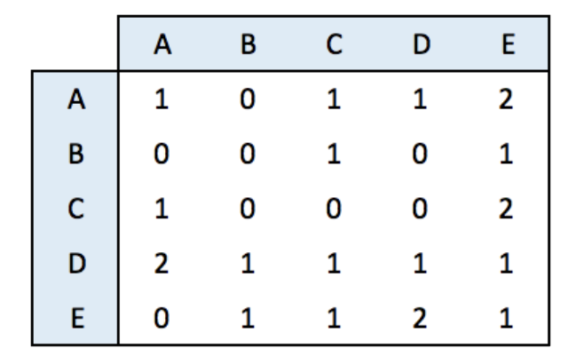
# 加载 igraph 包, 用于网络分析和可视化
library(igraph)
set.seed(10)
# 创建一个5x5的邻接矩阵, 元素为0到2的随机整数
data <- matrix(sample(0:2, 25, replace = TRUE), nrow = 5)
# 将矩阵的行名和列名设置为 A, B, C, D, E
colnames(data) <- rownames(data) <- LETTERS[1:5]
# 从邻接矩阵创建图 (graph) 对象
network <- graph_from_adjacency_matrix(data)
# 绘制网络图
plot(network)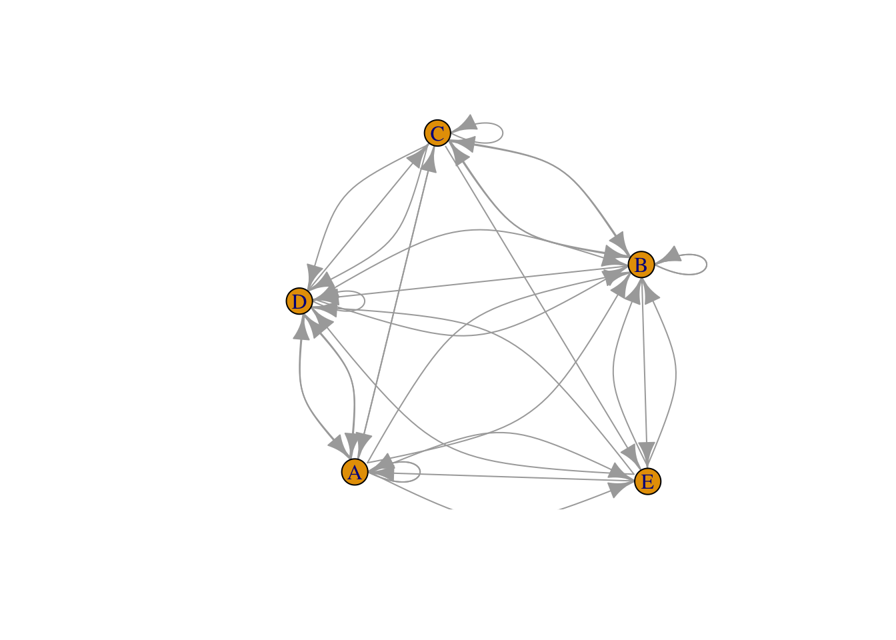
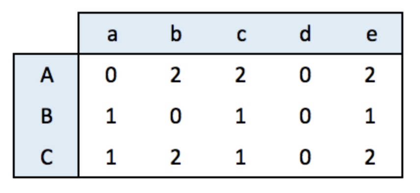
# 加载 igraph 包, 用于网络分析和可视化
library(igraph)
# 准备数据
set.seed(1)
data <- matrix(sample(0:2, 15, replace=TRUE), nrow=3)
colnames(data) <- letters[1:5]
rownames(data) <- LETTERS[1:3]
# 从关联矩阵创建图 (graph) 对象
network <- graph_from_incidence_matrix(data)
# 绘制网络图
plot(network)
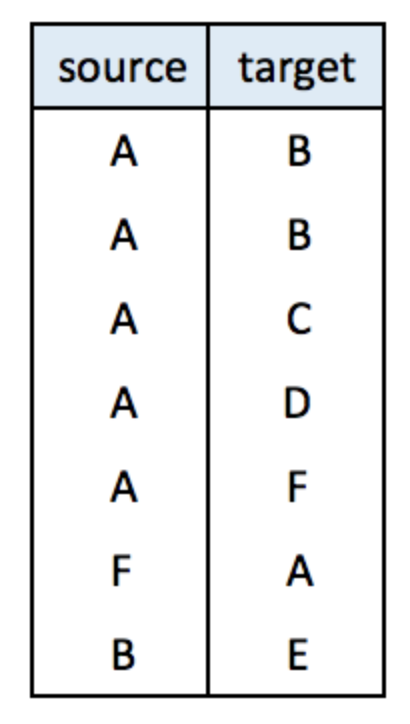
# 创建数据:
links <- data.frame(
source=c("A","A", "A", "A", "A","F", "B"),
target=c("B","B", "C", "D", "F","A","E")
)
# 创建网络对象
network <- graph_from_data_frame(d=links, directed=F)
# 绘制网络图
plot(network)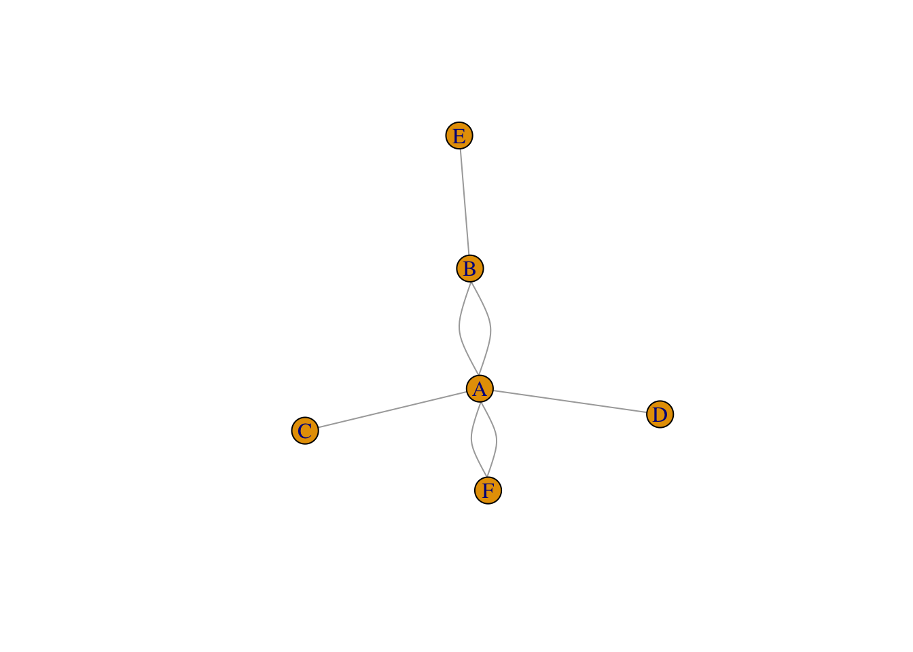
# 创建数据:
network <- graph_from_literal( A-B-C-D, E-A-E-A, D-C-A, D-A-D-C )
# 绘制网络图
plot(network)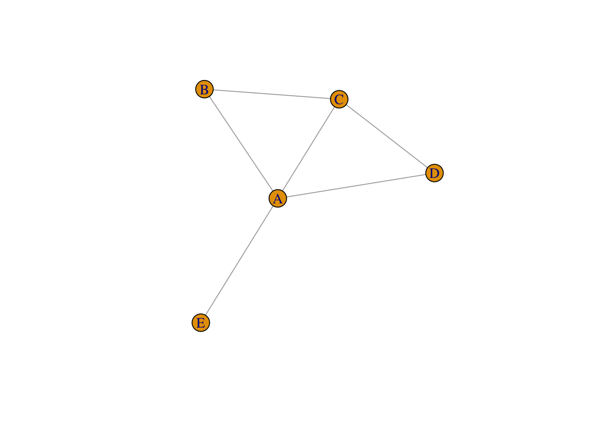
library(igraph)
# 创建数据
set.seed(1)
data <- matrix(sample(0:1, 100, replace=TRUE, prob=c(0.8,0.2)), nc=10)
network <- graph_from_adjacency_matrix(data , mode='undirected', diag=F )
# 绘制网络图
par(mar=c(0,0,0,0))
plot(network)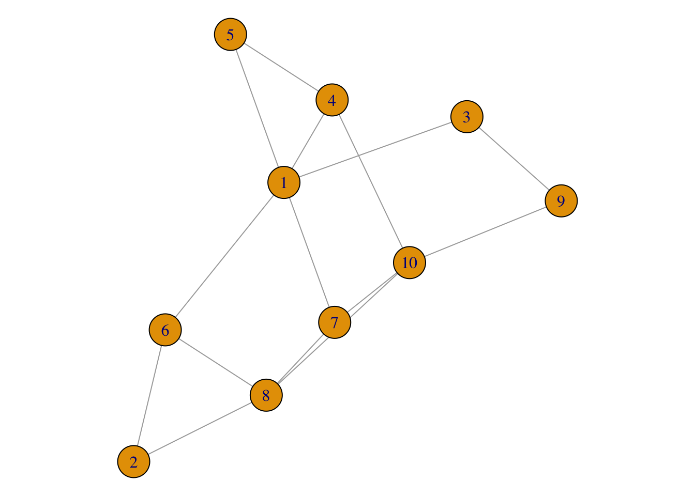
# 准备数据
set.seed(1)
data <- matrix(sample(0:1, 100, replace=TRUE, prob=c(0.8,0.2)), nc=10)
# 从邻接矩阵创建图 (graph) 对象
network <- graph_from_adjacency_matrix(data , mode='undirected', diag=F )
# 绘制网络图
plot(network,
vertex.color = rgb(0.8,0.2,0.2,0.9), # 节点颜色
vertex.frame.color = "Forestgreen", # 节点边框颜色
vertex.shape=c("circle","square"), # 节点形状
vertex.size=c(15:24), # 节点大小
vertex.size2=NA, # 节点第二个大小
)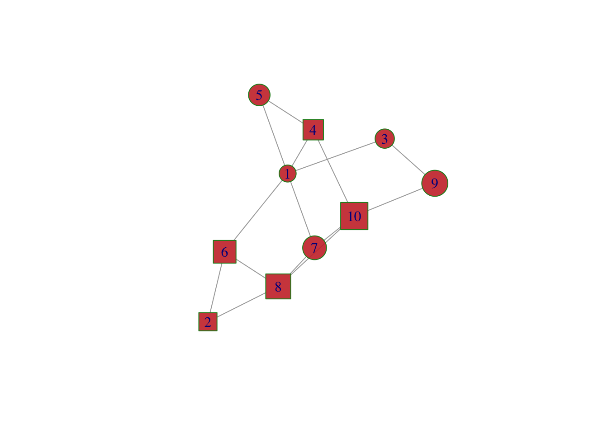
# 绘制网络图
plot(network,
vertex.label=LETTERS[1:10], # 节点标签
vertex.label.color=c("red","blue"), # 标签颜色
vertex.label.family="Times", # 标签字体
vertex.label.font=c(1,2,3,4), # 标签字体样式
vertex.label.cex=c(0.5,1,1.5), # 标签大小
vertex.label.dist=0, # 标签与节点的距离
vertex.label.degree=0 , # 标签与节点的位置
)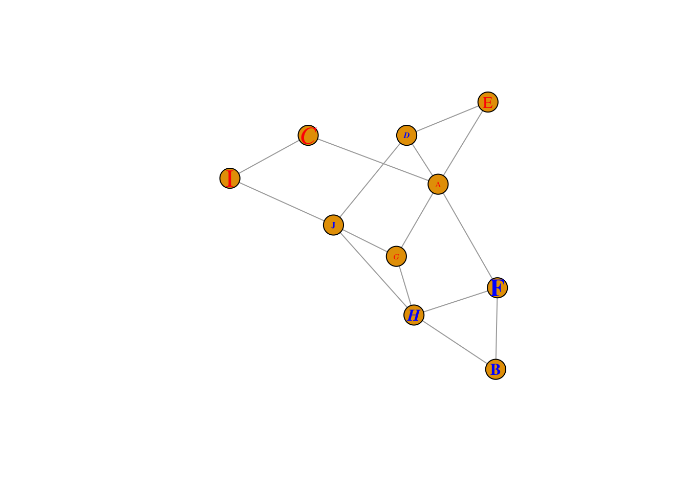
# 绘制网络图
plot(network,
edge.color=rep(c("red","pink"),5), # 边颜色
edge.width=seq(1,10), # 边宽度, 默认值为1
edge.arrow.size=1, # 箭头大小, 默认值为1
edge.arrow.width=1, # 箭头宽度, 默认值为1
edge.lty=c("solid"),
# 线型, 可以是0或“blank”, 1或“solid”, 2或“dashed”, 3或“dotted”, 4或“dotdash”, 5或“longdash”, 6或“twodash”
#edge.curved=c(rep(0,5), rep(1,5)) # 边弯曲度, 范围0-1 (FALSE设置为0, TRUE设置为0.5)
edge.curved=0.5
)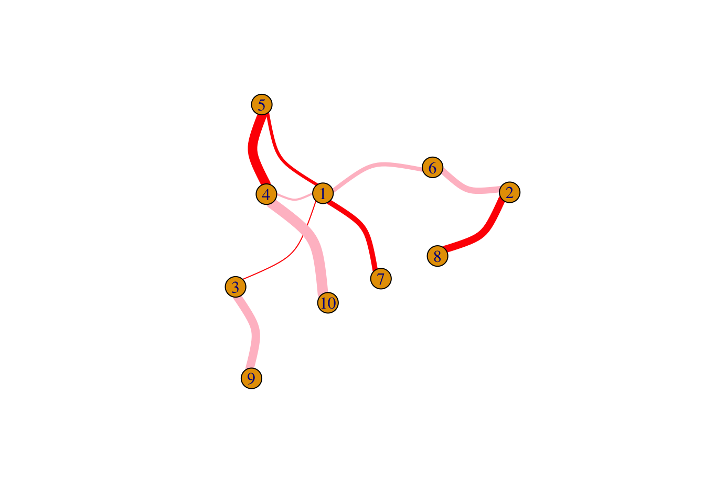
# 设置背景颜色
# par(bg="black")
plot(network,
# === vertex
vertex.color = rgb(0.8,0.4,0.3,0.8), # 节点颜色
vertex.frame.color = "white", # 节点边框颜色
vertex.shape="circle", # 节点形状
vertex.size=14, # 节点大小
vertex.size2=NA, # 节点第二个大小
# === vertex label
vertex.label=LETTERS[1:10], # 节点标签
vertex.label.color="white",
vertex.label.family="Times", # 标签字体
vertex.label.font=2, # 标签字体样式
vertex.label.cex=1, # 标签大小
vertex.label.dist=0, # 标签与节点的距离
vertex.label.degree=0 , # 标签与节点的位置
# === Edge
edge.color="white", # 边颜色
edge.width=4, # 边宽度
edge.lty="solid", # 线型, 可以是0或“blank”, 1或“solid”, 2或“dashed”, 3或“dotted”, 4或“dotdash”, 5或“longdash”, 6或“twodash”
edge.curved=0.3 , # 边弯曲度, 范围0-1 (FALSE设置为0, TRUE设置为0.5)
)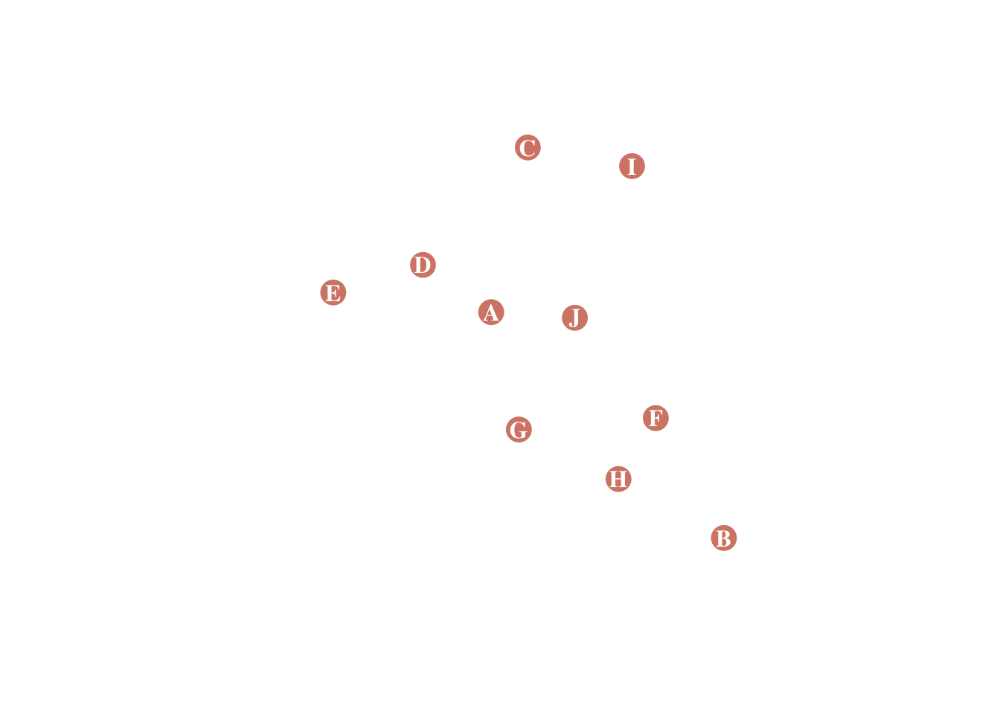
library(igraph)
# 创建数据
data <- matrix(sample(0:1, 400, replace=TRUE, prob=c(0.8,0.2)), nrow=20)
network <- graph_from_adjacency_matrix(data , mode='undirected', diag=F )
# 绘制网络图
plot(network, layout=layout.sphere, main="sphere")
plot(network, layout=layout.circle, main="circle")
plot(network, layout=layout.random, main="random")
plot(network, layout=layout.fruchterman.reingold, main="fruchterman.reingold")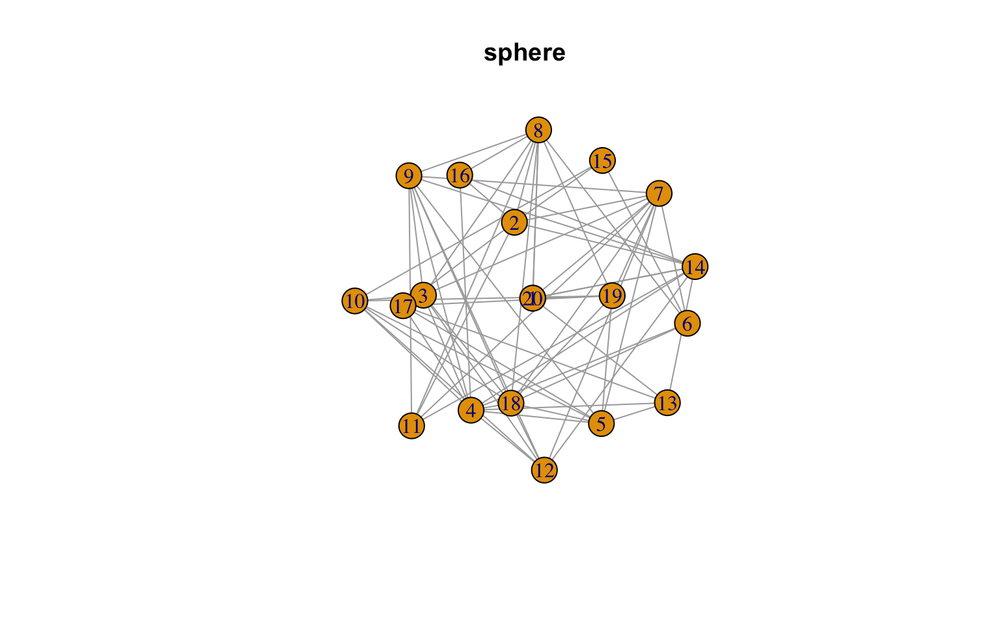
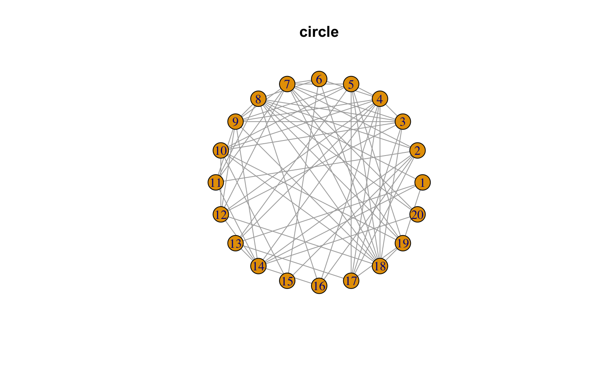
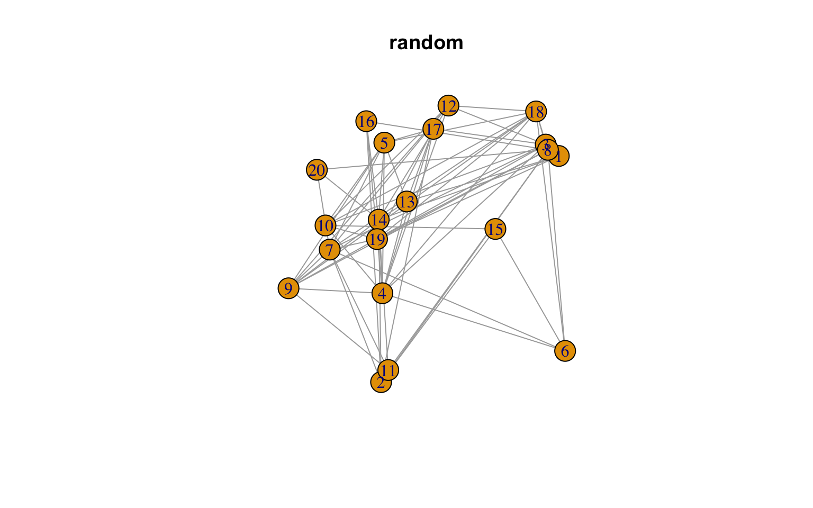
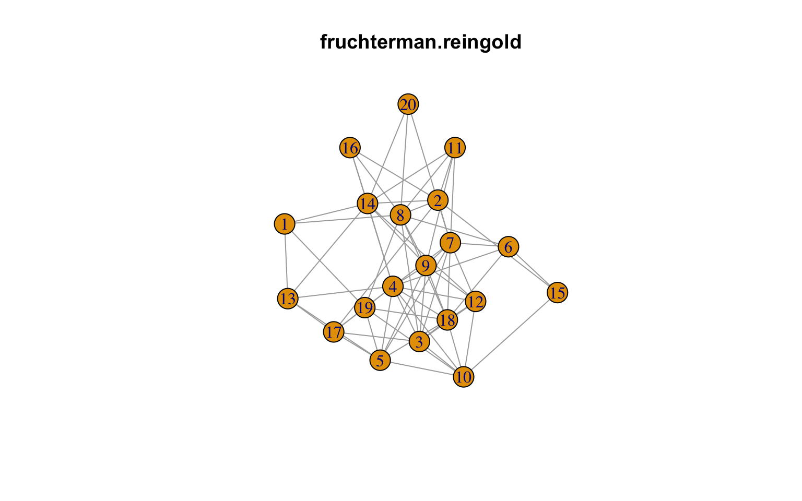
变量映射到节点特征:
# 准备数据
# 创建数据
links <- data.frame(
source=c("A","A", "A", "A", "A","J", "B", "B", "C", "C", "D","I"),
target=c("B","B", "C", "D", "J","A","E", "F", "G", "H", "I","I"),
importance=(sample(1:4, 12, replace=T))
)
nodes <- data.frame(
name=LETTERS[1:10],
carac=c( rep("young",3),rep("adult",2), rep("old",5))
)
# 将数据转换为 igraph 对象
network <- graph_from_data_frame(d=links, vertices=nodes, directed=F)
# 创建一个3色的调色板
library(RColorBrewer)
coul <- brewer.pal(3, "Set1")
# 创建一个颜色向量
my_color <- coul[as.numeric(as.factor(V(network)$carac))]
# 绘制网络图
plot(network, vertex.color=my_color)
# 添加图例
legend(
"bottomleft", # 图例位置
legend=levels(as.factor(V(network)$carac)), # 图例标签
col = coul , # 图例颜色
bty = "n", # 图例边框类型
pch=20 , # 图例符号类型
pt.cex = 3, # 图例符号大小
cex = 1.5, # 图例字体大小
text.col=coul , # 图例文字颜色
horiz = FALSE, # 图例是否水平排列
inset = c(0.1, 0.1) # 图例相对于绘图区域的偏移量
)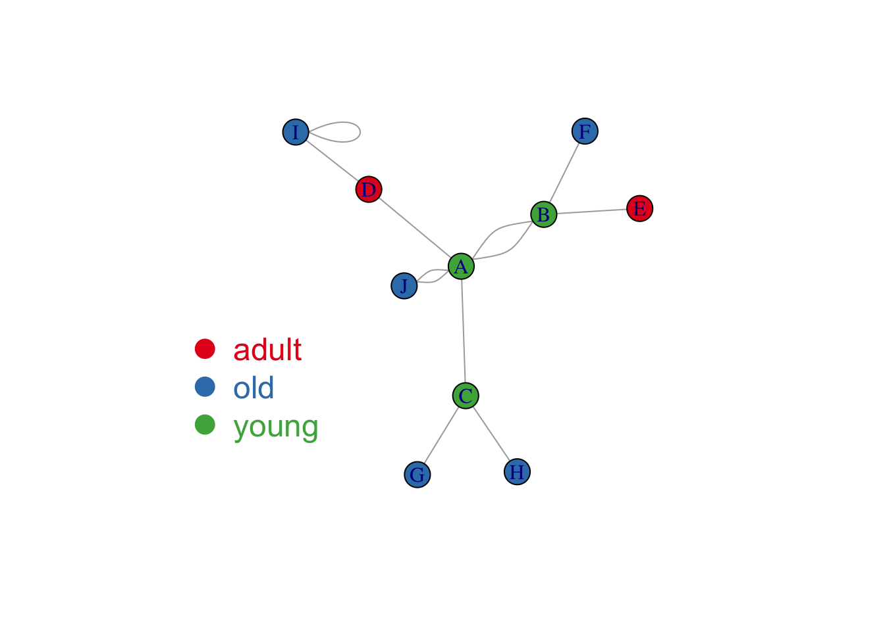
变量映射到连接特征:
# 绘制网络图
plot(network, vertex.color=my_color, edge.width=E(network)$importance*2 )
# 添加图例
legend(
"bottomleft", # 图例位置
legend=levels(as.factor(V(network)$carac)), # 图例标签
col = coul , # 图例颜色
bty = "n", # 图例边框类型
pch=20 , # 图例符号类型
pt.cex = 3, # 图例符号大小
cex = 1.5, # 图例字体大小
text.col=coul , # 图例文字颜色
horiz = FALSE, # 图例是否水平排列
inset = c(0.1, 0.1) # 图例相对于绘图区域的偏移量
)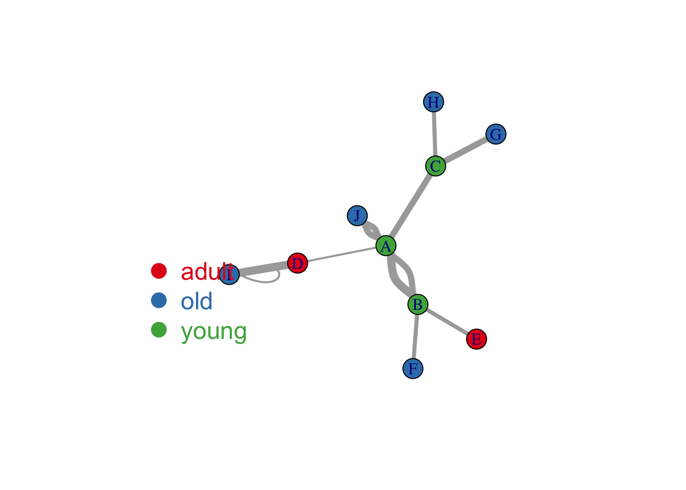
library(igraph) # 加载 igraph 包, 用于网络分析和可视化
# 准备数据并计算相关性矩阵
# 首先对 mtcars 数据集的第 1, 3, 4, 5, 6 列进行转置
# 然后计算转置后各行(即原始数据集中的各车辆)之间的相关性矩阵, 相关性矩阵是一个对称矩阵, 对角线上的元素为1
mat <- cor(t(mtcars[, c(1, 3:6)]))
# 过滤相关性矩阵, 仅保留强相关性(>=0.995)
# 将低于阈值的相关性系数设置为 0
mat[mat < 0.995] <- 0
# 从处理后的邻接矩阵创建 igraph 图对象
network <- graph_from_adjacency_matrix(
mat,
weighted = TRUE, # 边权重来自于矩阵中的值
mode = "undirected", # 创建一个无向图
diag = FALSE # 忽略对角线元素 (节点的自我连接)
)
# 绘制基础的网络图
plot(network)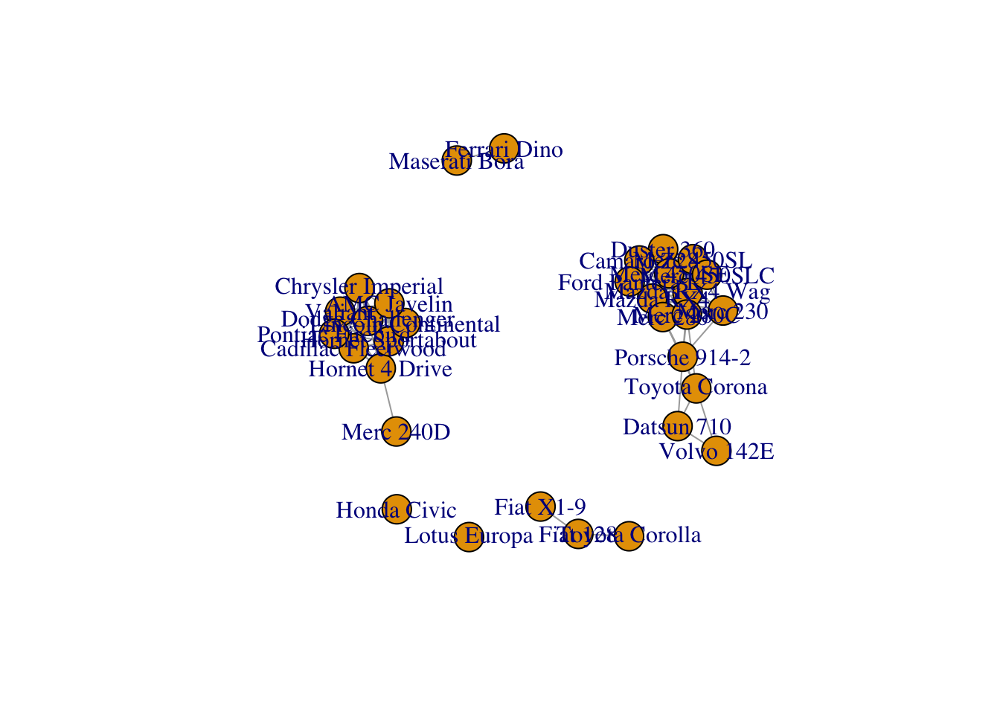
# 加载 RColorBrewer 包, 用于提供美观的调色板
library(RColorBrewer)
# 根据 `mtcars$cyl` 的因子水平数(即气缸数的种类), 从 "Set2" 调色板中生成颜色
coul <- brewer.pal(nlevels(as.factor(mtcars$cyl)), "Set2")
# 将颜色映射到每辆车(节点)
# as.factor(mtcars$cyl) 将气缸数转为因子, as.numeric() 获取其整数表示, 以此作为颜色向量 `coul` 的索引
my_color <- coul[as.numeric(as.factor(mtcars$cyl))]
# 设置绘图参数: 背景色为深灰色("grey13"), 图形边距全部设为0
par(bg = "grey13", mar = c(0, 0, 0, 0))
# 设置随机种子以确保每次生成的网络布局相同
set.seed(4)
# 绘制网络图并自定义节点属性
plot(network,
vertex.size = 12, # 节点大小
vertex.color = my_color, # 节点颜色 (根据气缸数)
vertex.label.cex = 0.7, # 节点标签的字体大小
vertex.label.color = "white", # 节点标签的颜色
vertex.frame.color = "transparent" # 节点边框颜色 (设为透明)
)
# 在图中央添加标题
text(0, 0, "mtcars network", col = "white", cex = 1.5)
# 添加图例
legend(
x = -0.2, y = -0.12,
legend = paste(levels(as.factor(mtcars$cyl)), " cylinders", sep = ""), # 图例文字
col = coul, # 图例颜色
bty = "n", # 无边框
pch = 20, # 图例符号为实心圆
pt.cex = 2, # 符号大小
cex = 1, # 文字大小
text.col = "white", # 文字颜色
horiz = FALSE # 垂直排列
)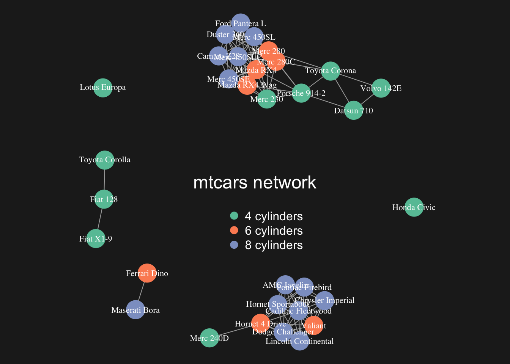
plot(network,
edge.color = rep(c("red", "pink"), 5), # 边的颜色 (循环使用"red"和"pink")
edge.width = seq(1, 10), # 边的宽度 (从1到10的序列)
edge.arrow.size = 1, # 箭头大小 (默认为1, 对无向图不显示)
edge.arrow.width = 1, # 箭头宽度 (默认为1, 对无向图不显示)
edge.lty = c("solid") # 边线型: "solid"为实线
# 其他可选线型: "blank", "dashed", "dotted", "dotdash", "longdash", "twodash"
# edge.curved=c(rep(0,5), rep(1,5)) # (示例)边的曲率 (0-1之间)
)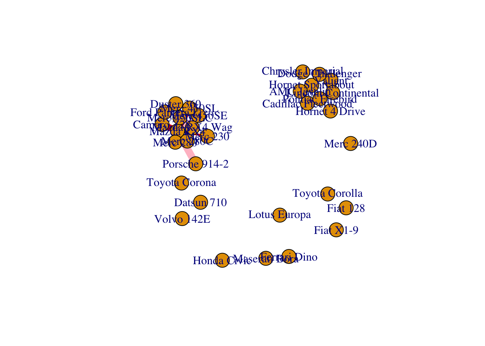
# 设置绘图背景为黑色
par(bg = "black")
plot(network,
# === 节点(vertex)属性 ===
vertex.color = rgb(0.8, 0.4, 0.3, 0.8), # 节点颜色: 使用rgb定义, 最后一个参数是透明度
vertex.frame.color = "white", # 节点边框颜色
vertex.shape = "circle", # 节点形状: "circle", "square", "rectangle"等
vertex.size = 14, # 节点大小
vertex.size2 = NA, # 节点的第二个尺寸(例如矩形的高度)
# === 节点标签(label)属性 ===
vertex.label = LETTERS[1:10], # 节点标签内容 (这里用前10个大写字母)
vertex.label.color = "white", # 标签颜色
vertex.label.family = "Times", # 标签字体
vertex.label.font = 2, # 标签字形: 1常规, 2粗体, 3斜体, 4粗斜体
vertex.label.cex = 1, # 标签字体大小
vertex.label.dist = 0, # 标签与节点的距离
vertex.label.degree = 0, # 标签相对于节点的位置(角度, 用pi表示)
# === 边(edge)属性 ===
edge.color = "white", # 边的颜色
edge.width = 4, # 边的宽度
edge.arrow.size = 1, # 箭头大小
edge.arrow.width = 1, # 箭头宽度
edge.lty = "solid", # 边线型 ("solid"是实线)
edge.curved = 0.3 # 边的曲率
)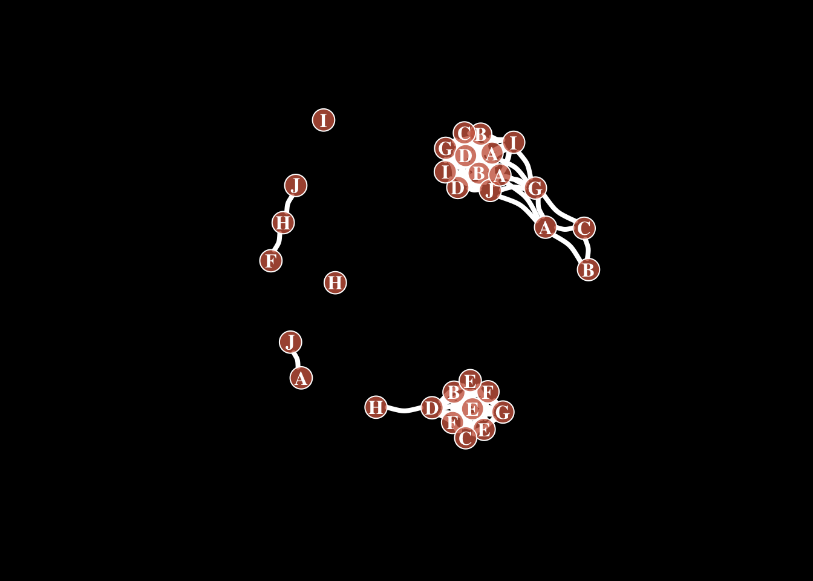
library(igraph)
# 创建数据
links=data.frame(
source=c("A","A", "A", "A", "A","J", "B", "B", "C", "C", "D","I"),
target=c("B","B", "C", "D", "J","A","E", "F", "G", "H", "I","I")
)
# 将数据转换为 igraph 对象
network <- graph_from_data_frame(d=links, directed=F)
# 计算每个节点的度数
deg <- degree(network, mode="all")
# 绘制网络图
plot(network, vertex.size=deg*6, vertex.color=rgb(0.1,0.7,0.8,0.5) )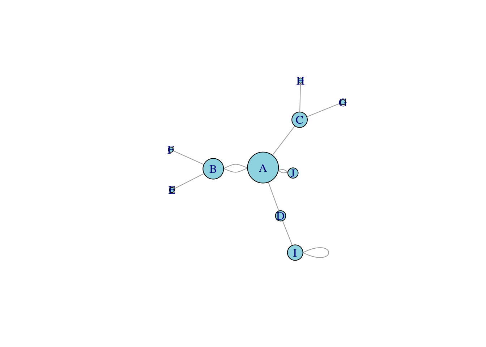
# 加载所需R包
library(igraph) # 用于网络结构分析 (在此代码块中未直接使用)
# install.packages("networkD3")
library(networkD3) # 用于创建D3.js交互式网络图
# 创建一个数据框作为边列表 (edge list)
# 每一行代表一条从 'from' 列节点到 'to' 列节点的连接
data <- data.frame(
from = c("A", "A", "B", "D", "C", "D", "E", "B", "C", "D", "K", "A", "M"),
to = c("B", "E", "F", "A", "C", "A", "B", "Z", "A", "C", "A", "B", "K")
)
# 使用 simpleNetwork 函数生成一个基础的交互式网络图
p <- simpleNetwork(data, height = "100px", width = "100px")
p使用 networkD3 创建基础交互式网络图
# 加载所需R包
library(igraph)
library(networkD3)
# 创建一个数据框作为边列表
data <- data.frame(
from = c("A", "A", "B", "D", "C", "D", "E", "B", "C", "D", "K", "A", "M"),
to = c("B", "E", "F", "A", "C", "A", "B", "Z", "A", "C", "A", "B", "K")
)
# 使用 simpleNetwork 函数并添加多个参数来自定义网络图
p <- simpleNetwork(data,
height = "100px", width = "100px",
Source = 1, # 数据框中源节点列的索引 (第一列)
Target = 2, # 数据框中目标节点列的索引 (第二列)
linkDistance = 10, # 节点之间的链接距离, 增大可使节点更分散
charge = -900, # 节点间的电荷力: 负值表示斥力, 正值表示引力
fontSize = 14, # 节点标签的字体大小
fontFamily = "serif", # 节点标签的字体
linkColour = "#666", # 所有边的颜色
nodeColour = "#69b3a2",# 所有节点的颜色
opacity = 0.9, # 节点的不透明度 (0=透明, 1=不透明)
zoom = TRUE # 是否允许通过滚轮缩放图形
)
p自定义交互式网络图的布局和样式